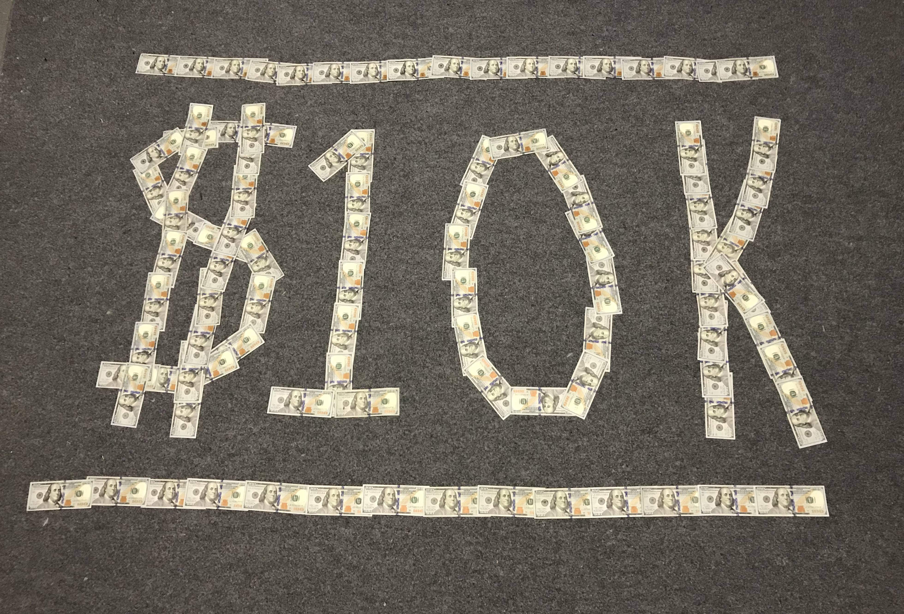

Hello, my name is Sebastian Cevallos and I'm 18. I have been interested in computers since I was a child. It began
with videogames and branched out when I learned about programming through the popular game Minecraft.
I got really interested in web development and designed a few simple websites in HTML before I learned
about lower level programming languages like Python, Java and C++.
At this point I was in highschool, at fifteen I began studying Python and created my first "Hello World"
program. I got really interested in Cyber Security and put lots of time learning about Virtual Machines,
computer networking topics like the OSI Model, and penetration testing tools like the operating system
Kali Linux.
When I turned 16, I took AP Computer Science which covered Java. This was one of my favorite classes,
and at that point I had decided I wanted a career in Computer Science, and eventually either become
a software developer or a penetration tester. I finished AP Computer Science with a 98%, enjoying
every second of it and obtaining a far deeper understanding about how actual programming works.
When I was 17, I began independently creating several projects using Java, and began trying to study
C++ on my own. I learned how to upload my projects to my Github and got ready for college.
When I turned 18, I took an Introduction to Computer Science class that covered C++ and graduated
with an A. This furthered my understanding of C++ and really sparked an interest in lower level
languages. Next year, I'm planning on taking an advanced class on C++ at Pasadena City College. Now,
With my new applications for internships over the summer I'm putting time into web development. I
have been studying CSS and HTML, and uploading all of my work using Amazon Web Services because I
know it's practicality in the industry.
Each year I give myself a list of goals that I have to work to completing by my next birthday. This
started when I was 16 and landed my first job, when I told myself I would save $10,000 before I turned
17. The craziest part to me was that I did it.

The following year, I told myself I would do the following before/when I turned 18...